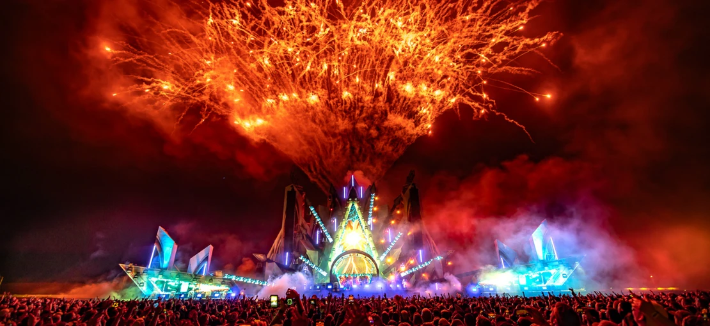

DRUM AND BASS
Vítej na stránce na téma Drum'n'Bass
Co je to Drum and Bass
Drum and Bass (nebo také Drum'n'Bass, zkráceně d'n'b či dnb) je žánr elektronické taneční hudby (EDM). Pro tento styl jsou charakteristické skladby založené na výrazné basové lince spolu s bicími. Umělci také často do žánru Drum'n'Bass remixují (přetvářejí) již existující skladby z jiných i stejných žánrů.
Známí Umělci
Existuje nespočet umělců, kteří se věnují stylu Drum'n'Bass. Nejznámější jsou například:
- Macky Gee
- Sub Focus
- Pendulum
- Metrik
Subžánry
Drum'n'Bass se dělí na několik podžánrů. Mezi nejznámější patří například:
- Jump Up
- Neurofunk
- Liquid
- Jungle
Let it Roll
Let It Roll je český festival zaměřený na drum'n'bass hudbu. Jedná se o největší drum'n'bass festival světa.

Let It Roll 2025, zdroj: novinky.cz - Kuba Zatloukal
Přehled prvních uplynulých letních festivalů:
| Ročník | Datum | Místo |
|---|---|---|
| 1. | 25.-26.07.2008 | Pískovna Oplatil, Staré Ždánice |
| 2. | 24.-25.07.2009 | Pískovna Oplatil, Staré Ždánice |
zdroj informací: wikipedia